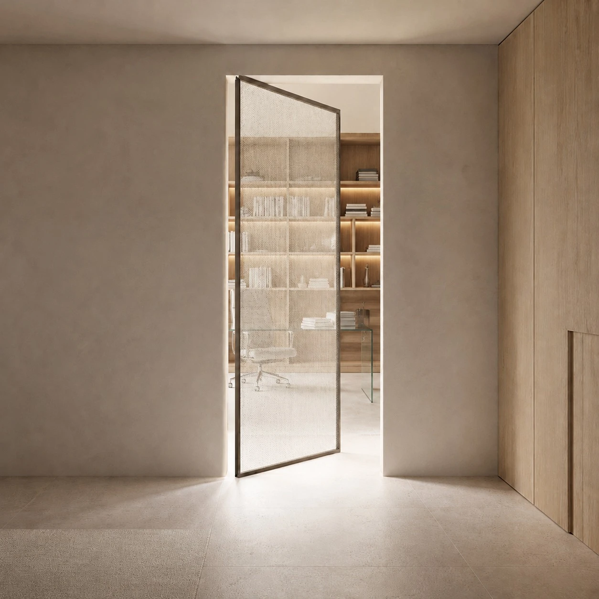
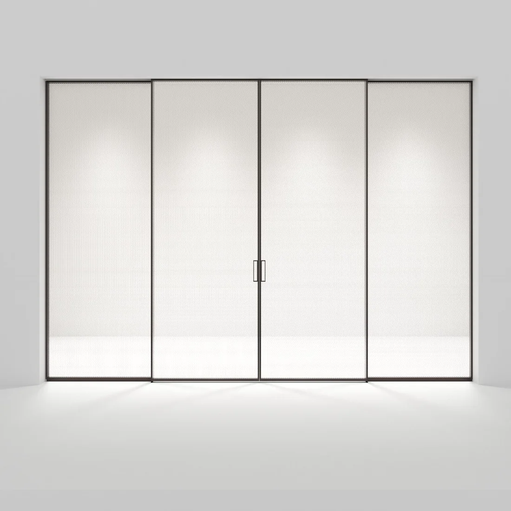
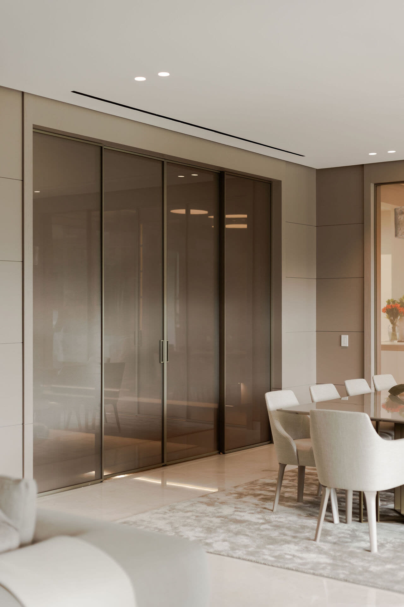
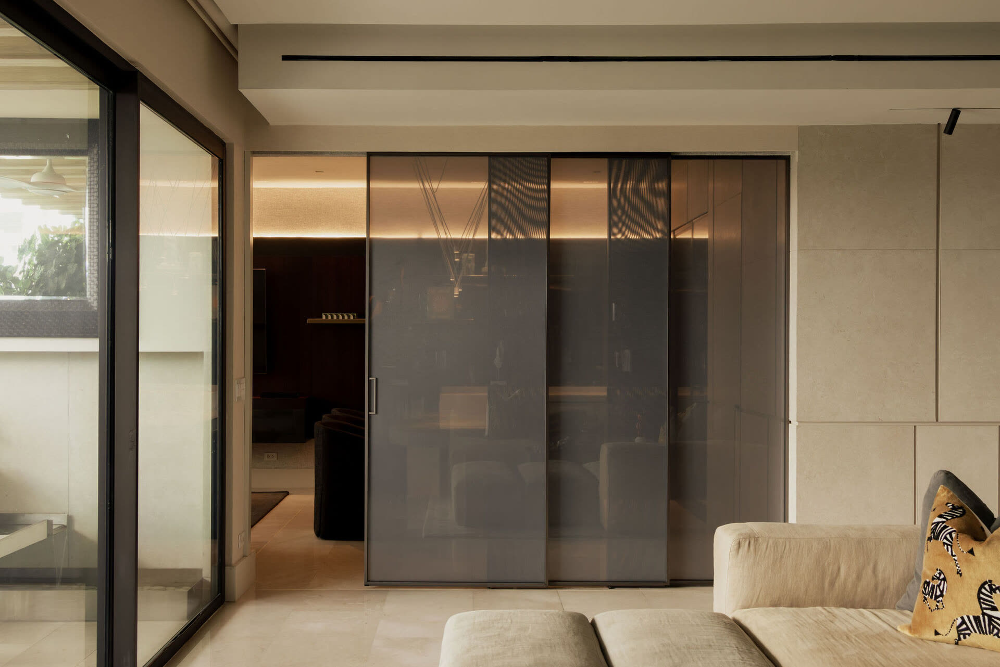
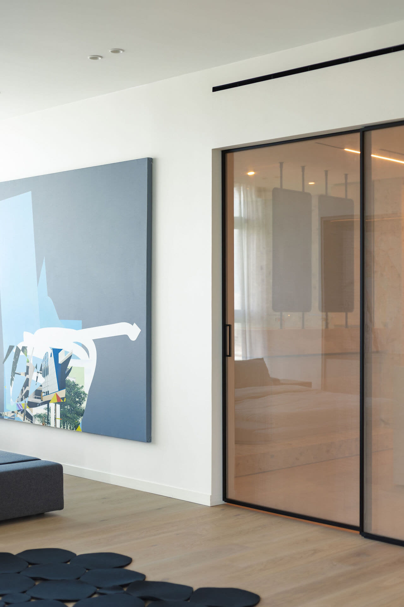

Sistemas de vidrio corredizo de alta gama, a medida para cada espacio.

Sistemas Pernia
Siete configuraciones de puertas corredizas de vidrio, fabricadas a medida para cada proyecto.
Acabados


No encontramos acabados para esa búsqueda.
02 // Nuestros sistemas
Siete formas de abrir un espacio
1A
Fabricación a medida · instalación propia
Una hoja corrediza
→ 2ADos hojas — apertura lateral
→ 2CDos hojas — apertura central
→ 3ATres hojas telescópicas
→ 4ACuatro hojas — luz máxima
→ PIVPuerta pivotante
→ SWIPuerta batiente
→

En imagen — pivotante
03 // Sistema destacado
pglass-4c
4 hojas — 2 fijas + 2 corredizas
Configuración
2 fijas + 2 corredizas
Dimensiones
4000×3000 / 4600×2600 mm
Perfil
Aluminio slim anodizado
Mecanismo
Soft close
Vidrio
8mm laminado
Colores de perfil



Puerta corrediza — vidrio laminado
N.º 01
Cada puerta, una pieza única.
04 // Proyectos
Instalaciones que definen espacios

Lantana
Panama City, 2025
Pradera
Panama City, 2024
TDM
Coronado, 2025La transparencia, resuelta.
Sistemas de vidrio corredizo · Panamá


Aluminio anodizado, nueve acabados
Perfilería propia · anodizado a medida
Cada sistema se fabrica en el acabado que el proyecto pide.
10+
Colores de perfil
15
Sistemas de puerta
3m
Altura maxima
PA
Fabricacion en Panama
Pernia Glass — sistemas de vidrio corredizo a medida
Sistema corredizo — apertura central
Loop 00:06
A medida
Cada sistema se dimensiona para su vano exacto.
Instalación propia
El mismo equipo fabrica, entrega e instala.
Vidrio laminado
Seguridad y silencio en cada hoja.
06 // Contacto
Tiene un proyecto arquitectonico?
Nuestro equipo puede asesorarle en la seleccion del sistema ideal para su espacio.
Del laboratorio a la arquitectura.